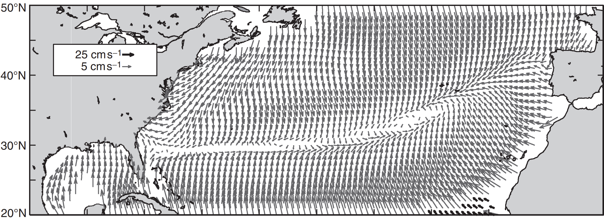
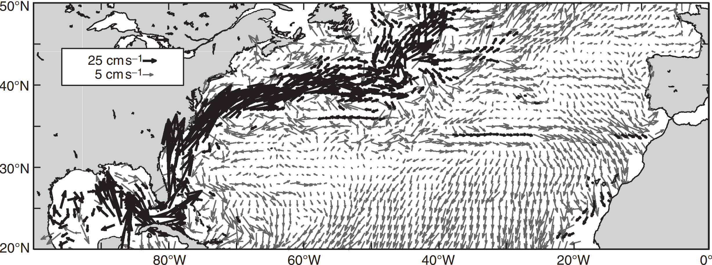

The Ekman Layer
While the details of the Ekman velocity profile are difficult to verify, there is a robust relationship between the wind stress and the depth integral of the Ekman velocities given by
$
U_{ek} \equiv
\underbrace{\int_{-D}^{0} u_{ek} \, dz}_{\substack{\text{Ekman volume flux per unit length} \\ \text{(D as Ekman layer depth)}}}
= \frac{\underbrace{\tau_y^s}_{\text{northward wind stress}}}{\underbrace{\rho}_{\text{density}} \, \underbrace{f}_{\text{Coriolis parameter}}}
, \quad
V_{ek} \equiv
\underbrace{\int_{-D}^{0} v_{ek} \, dz}_{\substack{\text{Ekman volume flux per unit length} \\ \text{(D as Ekman layer depth)}}}
= - \frac{\underbrace{\tau_x^s}_{\text{eastward wind stress}}}{\underbrace{\rho}_{\text{density}} \, \underbrace{f}_{\text{Coriolis parameter}}}
$
Time-mean velocity ($\text{cm s}^{-1}$) of surface drifters separated into
- an Ekman component predicted from
the wind stress

- a geostrophic component from the difference between the time-mean velocity and the Ekman velocity
